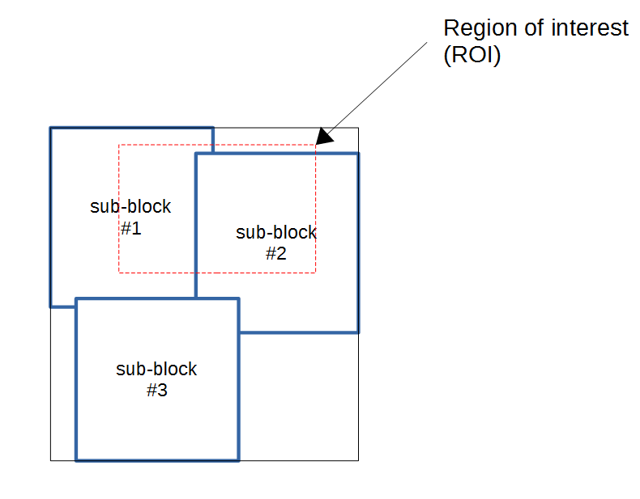
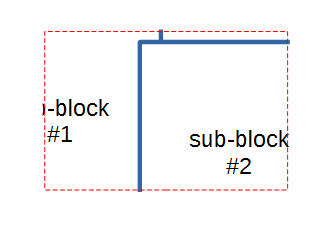

- Generated by
 1.9.1
1.9.1
|
libCZI
Reading CZI documents made easy
|
The bitmaps from the individual sub-blocks are logically arranged as tiles on a plane. In order to get a bitmap containing the tile-composite (or a part of it) the use of a accessor is required.
In this example, we have three tiles on a plane and request to get a certain section (aka region-of-interest ROI):

The resulting bitmap in this case will look like this:

When creating the output bitmap, the pixels are converted to the destination pixeltype (if necessary). This conversion is done in the following way:
| source pixel type | destination pixel type | operation |
|---|---|---|
| Gray8 | BGR24 | R8 = G8 = B8 ← Gray8 |
| Gray8 | BGR48 | R8 = G8 = B8 ← Gray8 |
| Gray16 | BGR24 | R8 = G8 = B8 ← Gray16/256 |
| Gray16 | BGR48 | R8 = G8 = B8 ← Gray16 |
| BGR24 | Gray8 | Gray8 ← \( \frac{R8+G8+B8}{3} \) |
| BGR48 | Gray8 | Gray8 ← \( (\frac{R16}{256}+\frac{G16}{256}+\frac{B16}{256})/3 \) |
| Gray8 | Gray16 | Gray8 ← Gray16/256 |
| RGB24 | RGB48 | R16 ← R8, G16 ← G8, B16 ← B8 |
| RGB48 | RGB24 | R8 ← \(\frac{R16}{256}\), G16 ← \(\frac{G16}{256}\), B16 ← \(\frac{B16}{256}\) |
We have three types of accessors available:
| accessor | purpose |
|---|---|
| SingleChannelTileAccessor | get a multi-tile composite only from pyramid-layer 0 |
| SingleChannelPyramidLayerTileAccessor | get a multi-tile composite from an explictly specified pyramid-layer |
| SingleChannelScalingTileAccessor | get a multi-tile composite at an arbitrary zoom-level |
The SingleChannelTileAccessor will only operate on tiles on pyramid-level 0 - i.e. only on sub-blocks for which physical_size = logical_size. The size (in pixels) of the resulting multi-tile-composit is the same as the ROI specified.
The SingleChannelPyramidLayerTileAccessor allows to access a specific pyramid-level. But it will only consider sub-blocks from this pyramd-level when composing the tile-composite.
The SingleChannelScalingTileAccessor allows to specify an arbitrary zoom-level, it will choose the appropriate pyramid-level and scale the bitmaps (if necessary) to fit the desired zoom-level.